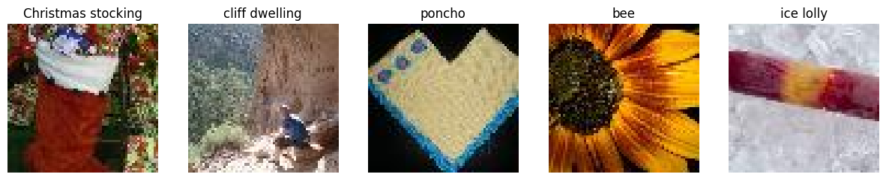
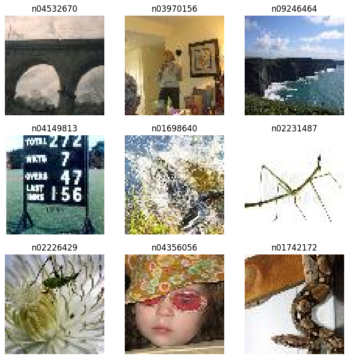
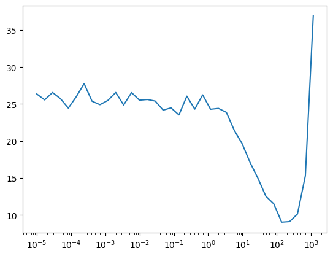
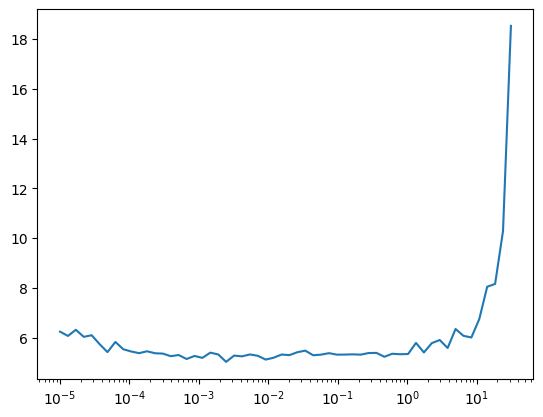

from datasets import load_dataset, load_dataset_builder
from torcheval.metrics import MulticlassAccuracy
import torchvision.transforms.v2.functional as TF
import fastcore.all as fc, numpy as np, matplotlib as mpl, matplotlib.pyplot as plt
import httpx
from minai import *Darknet
Trying darknet on imagenet tiny.
Darknet19 is very simple backbone for image detection model, yolov2. To learn how image detections work with bounding boxes, this seems like a good place to start.
set_seed(42)Data
We use imagenet tiny to test our darknet before moving on to the actual imagenet with 1000 classes. We will grab images from huggingface datasets.
ds_name = 'zh-plus/tiny-imagenet'
dsd = load_dataset(ds_name)
dsdDatasetDict({
train: Dataset({
features: ['image', 'label'],
num_rows: 100000
})
valid: Dataset({
features: ['image', 'label'],
num_rows: 10000
})
})Unfortunately, some images are gray images (1 channel) instead of colors (3 channels). We repeat channels to make it 3 channels. We also make the images to be scaled to between 0 and 1.
def transforms(b):
def process_image(img):
tensor = TF.to_dtype(TF.to_image(img), dtype=torch.float32, scale=True)
if tensor.shape[0] == 1: tensor = tensor.repeat(3, 1, 1)
return tensor
b['image'] = [process_image(o) for o in b['image']]
return bds = dsd.with_transform(transforms)
dls = DataLoaders.from_dd(ds,batch_size=64)
xb, yb = next(iter(dls.train))
xb.shape, yb.shape, yb[:5](torch.Size([64, 3, 64, 64]),
torch.Size([64]),
tensor([ 82, 83, 124, 184, 169]))yb[:5]tensor([ 82, 83, 124, 184, 169])lbls = np.array(ds['train'].features['label'].names)
lbls[:5]array(['n01443537', 'n01629819', 'n01641577', 'n01644900', 'n01698640'],
dtype='<U9')So, the labels are not very distinguishable. Let’s get the actual labels.
import astres = httpx.get('https://huggingface.co/datasets/zh-plus/tiny-imagenet/raw/main/classes.py')
cls = ast.literal_eval(res.text.split('=')[1])
dict(list(cls.items())[:5]){'n00001740': 'entity',
'n00001930': 'physical entity',
'n00002137': 'abstraction, abstract entity',
'n00002452': 'thing',
'n00002684': 'object, physical object'}def get_lbls(yb): return [cls[o].split(',')[0] for o in lbls[yb]]get_lbls(yb[:5])['Christmas stocking', 'cliff dwelling', 'poncho', 'bee', 'ice lolly']show_images(xb[:5], ncols=5, titles=get_lbls(yb[:5]))
That looks about right.
Basic model
Before using the darknet, I would like to use a simple model to get the training going.
get_simple_model
get_simple_model ()
model = get_simple_model()cbs = [
TrainCB(), # Handles the core steps in the training loop. Can be left out if using TrainLearner
DeviceCB(), # Handles making sure data and model are on the right device
MetricsCB(accuracy=MulticlassAccuracy()), # Keep track of any relevant metrics
ProgressCB(), # Displays metrics and loss during training, optionally plot=True for a pretty graph
]loss_fn = nn.CrossEntropyLoss()
learn = Learner(model, dls, loss_fn, lr=8, cbs=cbs)
learn.show_image_batch()
0.00% [0/1 00:00<?]
0.00% [0/1563 00:00<?]

learn.summary()
0.00% [0/1 00:00<?]
0.00% [0/1563 00:00<?]
Tot params: 15600; MFLOPS: 14.4| Module | Input | Output | Num params | MFLOPS |
|---|---|---|---|---|
| Conv2d | (64, 3, 64, 64) | (64, 200, 31, 31) | 15200 | 14.4 |
| BatchNorm2d | (64, 200, 31, 31) | (64, 200, 31, 31) | 400 | 0.0 |
| ReLU | (64, 200, 31, 31) | (64, 200, 31, 31) | 0 | 0.0 |
| AdaptiveAvgPool2d | (64, 200, 31, 31) | (64, 200, 1, 1) | 0 | 0.0 |
| Flatten | (64, 200, 1, 1) | (64, 200) | 0 | 0.0 |
learn.lr_find(gamma=1.7)
0.00% [0/10 00:00<?]
2.24% [35/1563 00:01<01:22 15.285]

learn.fit(3)| accuracy | loss | epoch | train | time |
|---|---|---|---|---|
| 0.011 | 5.293 | 0 | train | 01:04 |
| 0.013 | 5.283 | 0 | eval | 00:03 |
| 0.015 | 5.280 | 1 | train | 01:05 |
| 0.014 | 5.274 | 1 | eval | 00:03 |
| 0.017 | 5.272 | 2 | train | 01:07 |
| 0.017 | 5.266 | 2 | eval | 00:03 |
Good. It trains. So, the dataloader is set properly. Let’s move on to darknet.
Darknet
Let’s try darknet with a simple classification head.
ConvBlock
ConvBlock (in_ch, out_ch, ks=3, use_norm=True, use_act=True, act=LeakyReLU(negative_slope=0.1))
*Base class for all neural network modules.
Your models should also subclass this class.
Modules can also contain other Modules, allowing them to be nested in a tree structure. You can assign the submodules as regular attributes::
import torch.nn as nn
import torch.nn.functional as F
class Model(nn.Module):
def __init__(self) -> None:
super().__init__()
self.conv1 = nn.Conv2d(1, 20, 5)
self.conv2 = nn.Conv2d(20, 20, 5)
def forward(self, x):
x = F.relu(self.conv1(x))
return F.relu(self.conv2(x))Submodules assigned in this way will be registered, and will also have their parameters converted when you call :meth:to, etc.
.. note:: As per the example above, an __init__() call to the parent class must be made before assignment on the child.
:ivar training: Boolean represents whether this module is in training or evaluation mode. :vartype training: bool*
get_darknet19
get_darknet19 (conv=<class '__main__.ConvBlock'>, pool=MaxPool2d(kernel_size=2, stride=2, padding=0, dilation=1, ceil_mode=False))
head = nn.Sequential(
ConvBlock(1024, 200, ks=1),
nn.AdaptiveAvgPool2d(1),
nn.Flatten()
)
headSequential(
(0): ConvBlock(
(conv): Conv2d(1024, 200, kernel_size=(1, 1), stride=(1, 1))
(norm): BatchNorm2d(200, eps=1e-05, momentum=0.1, affine=True, track_running_stats=True)
(act): LeakyReLU(negative_slope=0.1)
)
(1): AdaptiveAvgPool2d(output_size=1)
(2): Flatten(start_dim=1, end_dim=-1)
)get_darknet19()+headSequential(
(0): ConvBlock(
(conv): Conv2d(3, 32, kernel_size=(3, 3), stride=(1, 1), padding=(1, 1))
(norm): BatchNorm2d(32, eps=1e-05, momentum=0.1, affine=True, track_running_stats=True)
(act): LeakyReLU(negative_slope=0.1)
)
(1): MaxPool2d(kernel_size=2, stride=2, padding=0, dilation=1, ceil_mode=False)
(2): ConvBlock(
(conv): Conv2d(32, 64, kernel_size=(3, 3), stride=(1, 1), padding=(1, 1))
(norm): BatchNorm2d(64, eps=1e-05, momentum=0.1, affine=True, track_running_stats=True)
(act): LeakyReLU(negative_slope=0.1)
)
(3): MaxPool2d(kernel_size=2, stride=2, padding=0, dilation=1, ceil_mode=False)
(4): ConvBlock(
(conv): Conv2d(64, 128, kernel_size=(3, 3), stride=(1, 1), padding=(1, 1))
(norm): BatchNorm2d(128, eps=1e-05, momentum=0.1, affine=True, track_running_stats=True)
(act): LeakyReLU(negative_slope=0.1)
)
(5): ConvBlock(
(conv): Conv2d(128, 64, kernel_size=(1, 1), stride=(1, 1))
(norm): BatchNorm2d(64, eps=1e-05, momentum=0.1, affine=True, track_running_stats=True)
(act): LeakyReLU(negative_slope=0.1)
)
(6): ConvBlock(
(conv): Conv2d(64, 128, kernel_size=(3, 3), stride=(1, 1), padding=(1, 1))
(norm): BatchNorm2d(128, eps=1e-05, momentum=0.1, affine=True, track_running_stats=True)
(act): LeakyReLU(negative_slope=0.1)
)
(7): MaxPool2d(kernel_size=2, stride=2, padding=0, dilation=1, ceil_mode=False)
(8): ConvBlock(
(conv): Conv2d(128, 256, kernel_size=(3, 3), stride=(1, 1), padding=(1, 1))
(norm): BatchNorm2d(256, eps=1e-05, momentum=0.1, affine=True, track_running_stats=True)
(act): LeakyReLU(negative_slope=0.1)
)
(9): ConvBlock(
(conv): Conv2d(256, 128, kernel_size=(1, 1), stride=(1, 1))
(norm): BatchNorm2d(128, eps=1e-05, momentum=0.1, affine=True, track_running_stats=True)
(act): LeakyReLU(negative_slope=0.1)
)
(10): ConvBlock(
(conv): Conv2d(128, 256, kernel_size=(3, 3), stride=(1, 1), padding=(1, 1))
(norm): BatchNorm2d(256, eps=1e-05, momentum=0.1, affine=True, track_running_stats=True)
(act): LeakyReLU(negative_slope=0.1)
)
(11): MaxPool2d(kernel_size=2, stride=2, padding=0, dilation=1, ceil_mode=False)
(12): ConvBlock(
(conv): Conv2d(256, 512, kernel_size=(3, 3), stride=(1, 1), padding=(1, 1))
(norm): BatchNorm2d(512, eps=1e-05, momentum=0.1, affine=True, track_running_stats=True)
(act): LeakyReLU(negative_slope=0.1)
)
(13): ConvBlock(
(conv): Conv2d(512, 256, kernel_size=(1, 1), stride=(1, 1))
(norm): BatchNorm2d(256, eps=1e-05, momentum=0.1, affine=True, track_running_stats=True)
(act): LeakyReLU(negative_slope=0.1)
)
(14): ConvBlock(
(conv): Conv2d(256, 512, kernel_size=(3, 3), stride=(1, 1), padding=(1, 1))
(norm): BatchNorm2d(512, eps=1e-05, momentum=0.1, affine=True, track_running_stats=True)
(act): LeakyReLU(negative_slope=0.1)
)
(15): ConvBlock(
(conv): Conv2d(512, 256, kernel_size=(1, 1), stride=(1, 1))
(norm): BatchNorm2d(256, eps=1e-05, momentum=0.1, affine=True, track_running_stats=True)
(act): LeakyReLU(negative_slope=0.1)
)
(16): ConvBlock(
(conv): Conv2d(256, 512, kernel_size=(3, 3), stride=(1, 1), padding=(1, 1))
(norm): BatchNorm2d(512, eps=1e-05, momentum=0.1, affine=True, track_running_stats=True)
(act): LeakyReLU(negative_slope=0.1)
)
(17): MaxPool2d(kernel_size=2, stride=2, padding=0, dilation=1, ceil_mode=False)
(18): ConvBlock(
(conv): Conv2d(512, 1024, kernel_size=(3, 3), stride=(1, 1), padding=(1, 1))
(norm): BatchNorm2d(1024, eps=1e-05, momentum=0.1, affine=True, track_running_stats=True)
(act): LeakyReLU(negative_slope=0.1)
)
(19): ConvBlock(
(conv): Conv2d(1024, 512, kernel_size=(1, 1), stride=(1, 1))
(norm): BatchNorm2d(512, eps=1e-05, momentum=0.1, affine=True, track_running_stats=True)
(act): LeakyReLU(negative_slope=0.1)
)
(20): ConvBlock(
(conv): Conv2d(512, 1024, kernel_size=(3, 3), stride=(1, 1), padding=(1, 1))
(norm): BatchNorm2d(1024, eps=1e-05, momentum=0.1, affine=True, track_running_stats=True)
(act): LeakyReLU(negative_slope=0.1)
)
(21): ConvBlock(
(conv): Conv2d(1024, 512, kernel_size=(1, 1), stride=(1, 1))
(norm): BatchNorm2d(512, eps=1e-05, momentum=0.1, affine=True, track_running_stats=True)
(act): LeakyReLU(negative_slope=0.1)
)
(22): ConvBlock(
(conv): Conv2d(512, 1024, kernel_size=(3, 3), stride=(1, 1), padding=(1, 1))
(norm): BatchNorm2d(1024, eps=1e-05, momentum=0.1, affine=True, track_running_stats=True)
(act): LeakyReLU(negative_slope=0.1)
)
(23): ConvBlock(
(conv): Conv2d(1024, 200, kernel_size=(1, 1), stride=(1, 1))
(norm): BatchNorm2d(200, eps=1e-05, momentum=0.1, affine=True, track_running_stats=True)
(act): LeakyReLU(negative_slope=0.1)
)
(24): AdaptiveAvgPool2d(output_size=1)
(25): Flatten(start_dim=1, end_dim=-1)
)learn = Learner(get_darknet19()+head, dls, loss_fn, lr=0.3, cbs=cbs)
learn.summary()
0.00% [0/1 00:00<?]
0.00% [0/1563 00:00<?]
Tot params: 20029976; MFLOPS: 224.6| Module | Input | Output | Num params | MFLOPS |
|---|---|---|---|---|
| ConvBlock | (64, 3, 64, 64) | (64, 32, 64, 64) | 960 | 3.5 |
| MaxPool2d | (64, 32, 64, 64) | (64, 32, 32, 32) | 0 | 0.0 |
| MaxPool2d | (64, 32, 64, 64) | (64, 32, 32, 32) | 0 | 0.0 |
| MaxPool2d | (64, 32, 64, 64) | (64, 32, 32, 32) | 0 | 0.0 |
| MaxPool2d | (64, 32, 64, 64) | (64, 32, 32, 32) | 0 | 0.0 |
| MaxPool2d | (64, 32, 64, 64) | (64, 32, 32, 32) | 0 | 0.0 |
| ConvBlock | (64, 32, 32, 32) | (64, 64, 32, 32) | 18624 | 18.9 |
| MaxPool2d | (64, 64, 32, 32) | (64, 64, 16, 16) | 0 | 0.0 |
| MaxPool2d | (64, 64, 32, 32) | (64, 64, 16, 16) | 0 | 0.0 |
| MaxPool2d | (64, 64, 32, 32) | (64, 64, 16, 16) | 0 | 0.0 |
| MaxPool2d | (64, 64, 32, 32) | (64, 64, 16, 16) | 0 | 0.0 |
| MaxPool2d | (64, 64, 32, 32) | (64, 64, 16, 16) | 0 | 0.0 |
| ConvBlock | (64, 64, 16, 16) | (64, 128, 16, 16) | 74112 | 18.9 |
| ConvBlock | (64, 128, 16, 16) | (64, 64, 16, 16) | 8384 | 2.1 |
| ConvBlock | (64, 64, 16, 16) | (64, 128, 16, 16) | 74112 | 18.9 |
| MaxPool2d | (64, 128, 16, 16) | (64, 128, 8, 8) | 0 | 0.0 |
| MaxPool2d | (64, 128, 16, 16) | (64, 128, 8, 8) | 0 | 0.0 |
| MaxPool2d | (64, 128, 16, 16) | (64, 128, 8, 8) | 0 | 0.0 |
| MaxPool2d | (64, 128, 16, 16) | (64, 128, 8, 8) | 0 | 0.0 |
| MaxPool2d | (64, 128, 16, 16) | (64, 128, 8, 8) | 0 | 0.0 |
| ConvBlock | (64, 128, 8, 8) | (64, 256, 8, 8) | 295680 | 18.9 |
| ConvBlock | (64, 256, 8, 8) | (64, 128, 8, 8) | 33152 | 2.1 |
| ConvBlock | (64, 128, 8, 8) | (64, 256, 8, 8) | 295680 | 18.9 |
| MaxPool2d | (64, 256, 8, 8) | (64, 256, 4, 4) | 0 | 0.0 |
| MaxPool2d | (64, 256, 8, 8) | (64, 256, 4, 4) | 0 | 0.0 |
| MaxPool2d | (64, 256, 8, 8) | (64, 256, 4, 4) | 0 | 0.0 |
| MaxPool2d | (64, 256, 8, 8) | (64, 256, 4, 4) | 0 | 0.0 |
| MaxPool2d | (64, 256, 8, 8) | (64, 256, 4, 4) | 0 | 0.0 |
| ConvBlock | (64, 256, 4, 4) | (64, 512, 4, 4) | 1181184 | 18.9 |
| ConvBlock | (64, 512, 4, 4) | (64, 256, 4, 4) | 131840 | 2.1 |
| ConvBlock | (64, 256, 4, 4) | (64, 512, 4, 4) | 1181184 | 18.9 |
| ConvBlock | (64, 512, 4, 4) | (64, 256, 4, 4) | 131840 | 2.1 |
| ConvBlock | (64, 256, 4, 4) | (64, 512, 4, 4) | 1181184 | 18.9 |
| MaxPool2d | (64, 512, 4, 4) | (64, 512, 2, 2) | 0 | 0.0 |
| MaxPool2d | (64, 512, 4, 4) | (64, 512, 2, 2) | 0 | 0.0 |
| MaxPool2d | (64, 512, 4, 4) | (64, 512, 2, 2) | 0 | 0.0 |
| MaxPool2d | (64, 512, 4, 4) | (64, 512, 2, 2) | 0 | 0.0 |
| MaxPool2d | (64, 512, 4, 4) | (64, 512, 2, 2) | 0 | 0.0 |
| ConvBlock | (64, 512, 2, 2) | (64, 1024, 2, 2) | 4721664 | 18.9 |
| ConvBlock | (64, 1024, 2, 2) | (64, 512, 2, 2) | 525824 | 2.1 |
| ConvBlock | (64, 512, 2, 2) | (64, 1024, 2, 2) | 4721664 | 18.9 |
| ConvBlock | (64, 1024, 2, 2) | (64, 512, 2, 2) | 525824 | 2.1 |
| ConvBlock | (64, 512, 2, 2) | (64, 1024, 2, 2) | 4721664 | 18.9 |
| ConvBlock | (64, 1024, 2, 2) | (64, 200, 2, 2) | 205400 | 0.8 |
| AdaptiveAvgPool2d | (64, 200, 2, 2) | (64, 200, 1, 1) | 0 | 0.0 |
| Flatten | (64, 200, 1, 1) | (64, 200) | 0 | 0.0 |
# lr = 1
learn.fit(10)| accuracy | loss | epoch | train | time |
|---|---|---|---|---|
| 0.024 | 4.961 | 0 | train | 00:30 |
| 0.037 | 4.760 | 0 | eval | 00:02 |
| 0.061 | 4.454 | 1 | train | 00:30 |
| 0.044 | 4.779 | 1 | eval | 00:01 |
| 0.082 | 4.209 | 2 | train | 00:30 |
| 0.070 | 4.322 | 2 | eval | 00:01 |
| 0.103 | 4.035 | 3 | train | 00:30 |
| 0.102 | 4.119 | 3 | eval | 00:01 |
| 0.131 | 3.830 | 4 | train | 00:30 |
| 0.131 | 3.840 | 4 | eval | 00:01 |
| 0.159 | 3.650 | 5 | train | 00:30 |
| 0.136 | 3.868 | 5 | eval | 00:01 |
| 0.185 | 3.499 | 6 | train | 00:30 |
| 0.137 | 3.937 | 6 | eval | 00:01 |
| 0.206 | 3.379 | 7 | train | 00:31 |
| 0.171 | 3.708 | 7 | eval | 00:01 |
| 0.227 | 3.256 | 8 | train | 00:31 |
| 0.092 | 4.795 | 8 | eval | 00:01 |
| 0.249 | 3.146 | 9 | train | 00:31 |
| 0.231 | 3.292 | 9 | eval | 00:01 |
# lr = 0.1
learn.fit(10)| accuracy | loss | epoch | train | time |
|---|---|---|---|---|
| 0.039 | 4.780 | 0 | train | 00:30 |
| 0.057 | 4.529 | 0 | eval | 00:01 |
| 0.092 | 4.218 | 1 | train | 00:30 |
| 0.044 | 5.159 | 1 | eval | 00:01 |
| 0.137 | 3.904 | 2 | train | 00:31 |
| 0.135 | 3.906 | 2 | eval | 00:01 |
| 0.163 | 3.705 | 3 | train | 00:31 |
| 0.113 | 4.146 | 3 | eval | 00:01 |
| 0.185 | 3.565 | 4 | train | 00:31 |
| 0.166 | 3.697 | 4 | eval | 00:01 |
| 0.206 | 3.444 | 5 | train | 00:31 |
| 0.122 | 4.253 | 5 | eval | 00:01 |
| 0.224 | 3.347 | 6 | train | 00:30 |
| 0.208 | 3.458 | 6 | eval | 00:01 |
| 0.239 | 3.251 | 7 | train | 00:30 |
| 0.196 | 3.567 | 7 | eval | 00:01 |
| 0.257 | 3.167 | 8 | train | 00:30 |
| 0.168 | 3.895 | 8 | eval | 00:01 |
| 0.273 | 3.078 | 9 | train | 00:30 |
| 0.178 | 3.765 | 9 | eval | 00:01 |
optimization
Let’s try to use different optimizers, such as AdamW.
from functools import partial
from torch import optim# optim.AdamW?opt_func = partial(optim.AdamW, eps=1e-5)
model = get_darknet19()+head
learn = Learner(model, dls, loss_fn, lr=0.1, cbs=cbs, opt_func=opt_func)
learn.lr_find()
0.00% [0/10 00:00<?]
3.58% [56/1563 00:01<00:32 8.154]

model = get_darknet19()+head
learn = Learner(model, dls, loss_fn, lr=0.1, cbs=cbs, opt_func=opt_func)learn.fit(10)| accuracy | loss | epoch | train | time |
|---|---|---|---|---|
| 0.012 | 5.155 | 0 | train | 00:33 |
| 0.011 | 5.270 | 0 | eval | 00:01 |
| 0.015 | 5.071 | 1 | train | 00:33 |
| 0.012 | 5.314 | 1 | eval | 00:01 |
| 0.015 | 5.047 | 2 | train | 00:33 |
| 0.012 | 5.279 | 2 | eval | 00:01 |
| 0.020 | 4.963 | 3 | train | 00:33 |
| 0.008 | 6.116 | 3 | eval | 00:02 |
| 0.026 | 4.854 | 4 | train | 00:33 |
| 0.023 | 5.260 | 4 | eval | 00:01 |
| 0.028 | 4.826 | 5 | train | 00:33 |
| 0.012 | 5.225 | 5 | eval | 00:01 |
| 0.028 | 4.821 | 6 | train | 00:33 |
| 0.009 | 5.513 | 6 | eval | 00:01 |
| 0.028 | 4.819 | 7 | train | 00:33 |
| 0.018 | 5.326 | 7 | eval | 00:01 |
| 0.028 | 4.813 | 8 | train | 00:33 |
| 0.014 | 5.297 | 8 | eval | 00:01 |
| 0.028 | 4.815 | 9 | train | 00:34 |
| 0.020 | 4.995 | 9 | eval | 00:01 |